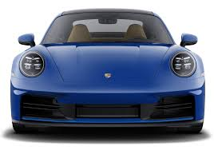
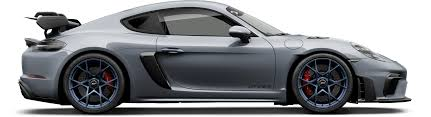
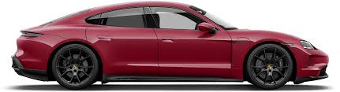
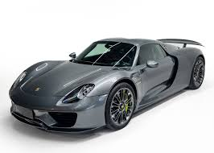
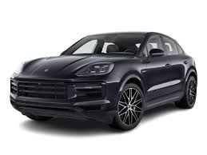

Curiosidades
1-El primer Porsche, el 356, fue ensamblado en un aserradero en Austria en 1948, y originalmente se iba a llamar Porsche 901, pero debido a la disputa con Peugeot sobre los derechos del nombre, se cambió a Porsche 911, que se ha convertido en su modelo más icónico.
2-Porsche ha sido la marca más exitosa en Le Mans, con 19 victorias absolutas, y su 917, que ganó en los 60 y 70, era tan rápido que fue prohibido en algunas competiciones.
3-Curiosamente, el primer coche diseñado por Ferdinand Porsche, el Egger-Lohner C.2 Phaeton, era eléctrico, un precursor de los autos eléctricos modernos.
4-Porsche también tiene un vínculo estrecho con el cine, ya que Steve McQueen ayudó a popularizar el Porsche 911 y el 917 en su película Le Mans de 1971.
5-En cuanto a la subasta, el Porsche 917K de 1970 se vendió por un impresionante precio de $14 millones de dólares.
6-Además, Porsche no solo fabrica sus propios autos, sino que diseñó el Audi RS2 Avant y el Mercedes-Benz 500E, y hasta el Seat Ibiza en sus primeros años.
7-El logo de Porsche está inspirado en el escudo de armas de Stuttgart, la ciudad natal de la marca, con un caballo en el centro que representa la región.
9-en el mundo de los videojuegos, Porsche estuvo ausente durante años debido a acuerdos de exclusividad, pero ahora está presente en populares títulos como Gran Turismo y Forza Horizon.
10-Esta marca sigue siendo sinónimo de innovación, lujo y rendimiento, adaptándose a los tiempos con su modelo eléctrico, el Taycan, y manteniendo una presencia dominante en el mundo del automovilismo y el diseño de autos deportivos.
Modelos
Porshce 911
El Porsche 911 es un icónico deportivo de alto rendimiento que se ha mantenido en producción desde 1964. Con su motor trasero y diseño distintivo, ha evolucionado a lo largo de las décadas, ofreciendo versiones como el Carrera, Turbo y GT3, siempre destacándose por su agilidad, potencia y tecnología avanzada. Considerado un símbolo de lujo y rendimiento, el 911 combina tradición y modernidad, siendo uno de los autos más reconocidos y deseados en el mundo.

Porsche Cayman
El Porsche Cayman es un deportivo compacto que comparte muchas características con el 911, pero con un enfoque más accesible y de menor precio. Lanzado en 2005, el Cayman tiene un diseño de motor central, lo que mejora su manejo y equilibrio. Ofrece un rendimiento impresionante con versiones como el Cayman S y el Cayman GT4, que combinan potencia, precisión y una experiencia de conducción envolvente. Es un modelo más asequible que el 911, pero mantiene la calidad y el legado de Porsche, siendo ideal para quienes buscan un deportivo de alto rendimiento con una conducción más enfocada en la agilidad.

Porsche Taycan
El Porsche Taycan es el primer modelo totalmente eléctrico de la marca alemana, lanzado en 2019. Con un diseño futurista y elegante, el Taycan combina el lujo y la ingeniería de Porsche con la sostenibilidad. Ofrece una potencia impresionante gracias a sus motores eléctricos, alcanzando versiones como el Taycan Turbo S, que puede acelerar de 0 a 100 km/h en menos de 3 segundos. Además, cuenta con una autonomía competitiva, una conducción dinámica y tecnología avanzada, todo mientras mantiene la calidad y el rendimiento que se esperan de Porsche. Es una opción para aquellos que buscan un deportivo eléctrico sin comprometer las prestaciones.

Porsche 918 Spyder
El Porsche 918 Spyder es un superdeportivo híbrido que combina lo mejor de la ingeniería tradicional de Porsche con tecnología de vanguardia. Lanzado en 2015, el 918 Spyder tiene un motor V8 de 4.6 litros combinado con dos motores eléctricos, lo que le permite generar una potencia total de 887 caballos de fuerza. Con una aceleración de 0 a 100 km/h en menos de 2.6 segundos, es uno de los coches más rápidos y potentes de la historia de Porsche. Además de su rendimiento impresionante, el 918 Spyder ofrece una tecnología híbrida avanzada, con la capacidad de circular en modo completamente eléctrico para distancias cortas. Solo se produjeron 918 unidades, lo que lo convierte en una verdadera pieza de colección.

Porsche Cayenne
El Porsche Cayenne es un SUV de lujo que combina el rendimiento y la sofisticación propios de Porsche con la versatilidad de un todoterreno. Lanzado en 2002, el Cayenne ha sido un éxito comercial, ofreciendo versiones con motores V6, V8 e incluso híbridos. Con una conducción dinámica similar a la de los deportivos de Porsche, el Cayenne destaca por su capacidad off-road sin sacrificar confort ni lujo. Además, cuenta con un interior de alta calidad, tecnología avanzada y opciones de personalización. Es ideal para quienes buscan un vehículo que combine el estilo y el rendimiento deportivo con la funcionalidad de un SUV.
